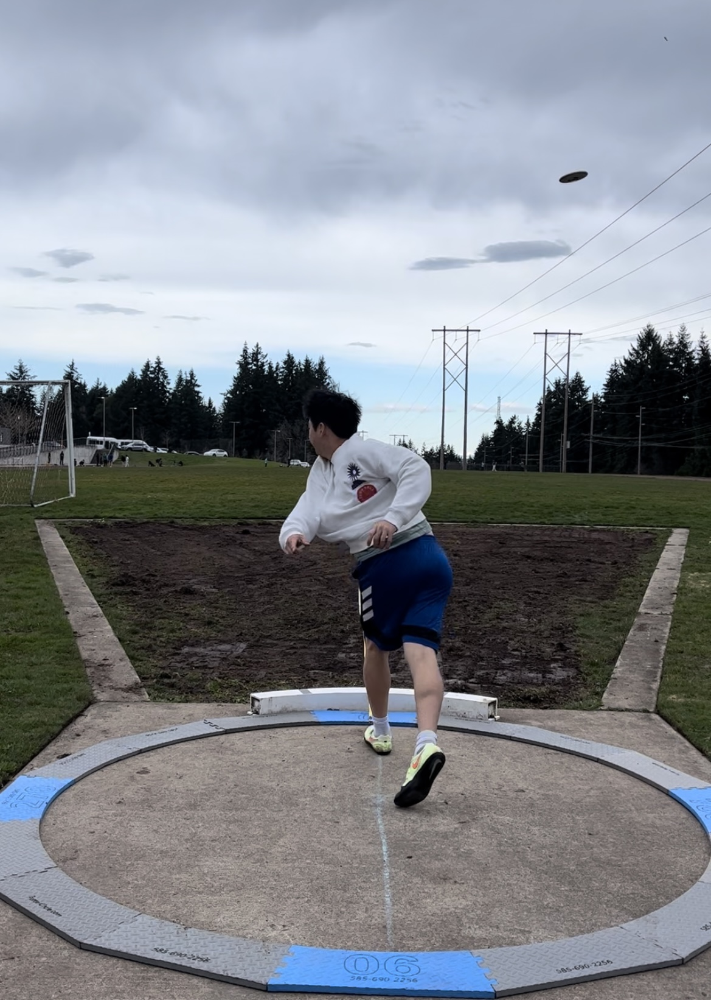

Visit Here for a selection of beginner-friendly discuses to purchase
Visit Here for one-on-one instructions from one of the best discus coaches in the world
Visit Here for a comprehensive guide on how to throw the discus
